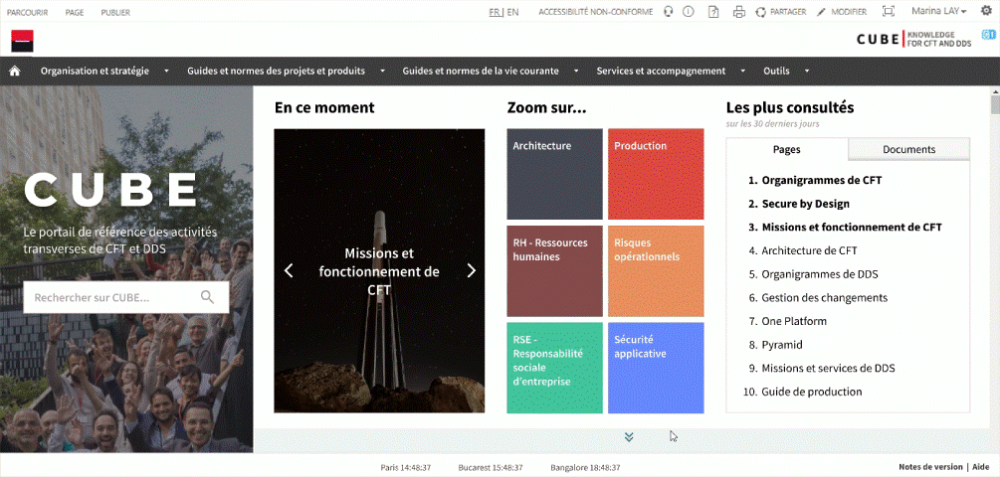

CUBE
Designing a showcase homepage for one of Société Générale's IT directions.
Time frame: February - July 2023
Tools: Figma
Team: Boris Durupt-Zhou, Camille Kui
CUBE is the knowledge management portal for CFT (Corporate Functions Technologies), one of Société Générale's IT departments. Its objective is to identify and synthesize all information necessary for all CFT employees, and to centralize it to facilitate information searching.
With the goal of continuous improvement of the platform, several UX projects are conducted each year on CUBE. During one of these previous projects, users spontaneously gave us the following feedback about the homepage:
üí≠ "I find the homepage really empty. The white background with text on it doesn't attract me, it doesn't speak to me."
üí≠ "My first impression is that it's rather cold. It lacks dynamic elements."
üí≠ "I wonder if there's a way to do something visually on the homepage. It feels like it's the emptiest and simplest page of the entire site."
üí≠ "When I arrive on the homepage, I feel like it's dead."

A redesign of the homepage was therefore deemed necessary, with several key challenges:
Project challenges
- üëâ Give visitors a better impression of CUBE.
- üëâ Improve the attractiveness of CFT.
- üëâ Strengthen CUBE's positioning as an internal showcase for CFT.
üîç
Empathize
What do the users need and want?
User Interviews
For the preliminary research phase, we organized a series of interviews with our target users to identify pain points and changes needed for the CUBE homepage.
Methodology
- üéôÔ∏è Individual interviews
- üë• 44 users, over a period of 2 and a half weeks
- ⏱️ 15 to 30 minutes
- üè¢ In-person or Remote (camera encouraged)
User panel
For this series of interviews, we assembled a panel of 44 users that was both heterogeneous and representative of CUBE's target population:
Functions:
| CDS Managers | CSM Managers | Other roles |
|---|---|---|
| 2 | 3 | 39 |
Countries:
| France | India | Romania |
|---|---|---|
| 35 | 5 | 4 |
Seniority:
| < 5 months | > 5 months |
|---|---|
| 19 | 25 |
Profile:
| Readers* | Contributors* |
|---|---|
| 35 | 9 |
*Contributors are activity managers who have modification rights on the portal, while readers only have viewing rights.
Questions
What is your overall impression of the homepage? What gives you this impression? How would you change it?
What do you think of the homepage design in terms of visuals? How would you improve it?
What do you think of the homepage in terms of content? How would you improve it?
Do you have in mind an example of a portal or website whose homepage seems particularly well-constructed? Which one?
Interview Results
Positive feedback:
✔️ Structure: "It's simple, very structured, I like it.", "I find it very simple, but in a good way."
Negative feedback:
❌ Identity: "I have trouble identifying what type of platform I've arrived on."
❌ Target audience: "I feel like I'm not the target."
- üí° UX Recommendations:
- → Present CUBE with a sentence or short description.
- → Make the user feel welcome by offering content for different types of profiles.
Negative feedback:
❌ Design: "From a look and feel perspective, it feels a bit outdated overall.", "The search bar with the shadow behind it looks very old school."
❌ Colors: "Everything is white and dull.", "There could be a bit more play with colors."
❌ Proportions: "The icons and text are tiny, but there's all this unused space all around - at least on large screens, because on small screens it's less shocking. So is it a responsiveness issue?", "Your CUBE shortcuts take up half the page."
❌ Graphic charter: "It should perhaps be a bit more design system."
- üí° UX Recommendations:
- → Add more colors, play with the palette for text or images.
- → Use the available space.
- → Use the Société Générale graphic charter.
Negative feedback:
❌ Dynamism: "The homepage could be a bit more evolving by surfacing more dynamic content.", "Instead of fixed elements on the left, there should be evolving content."
❌ Hierarchy: "The first time I went there I thought there was only Your essential information on CUBE.", "I don't know if there shouldn't be some work on hierarchy. Everything seems mixed up."
❌ Clarity: "You don't know what it corresponds to, there's no tooltip when you hover over the icons.", "It needs to be simplified from the homepage."
❌ Shortcuts: "The shortcuts, I'm not sure it's the type of portal that lends itself to that."
❌ Topics: "To interest everyone, you need to take very broad and not too technical topics."
- üí° UX Recommendations:
- → Add dynamic and lively content.
- → Select and highlight broad topics targeting all of CFT.
- → Clarify titles (especially abbreviations or technical terms).
üéØ
Define
Who is the user and what problem do they face?
Project Objective
Create an intuitive and lively homepage by adding color and content (especially dynamic content) to provide a better understanding of CUBE and retain all portal users.
Roadmap

üí°
Ideate
How can we help them solve their problem?
Ideation Workshop
I organized a 1.5-hour workshop aimed at gathering initial ideas from the team and prioritizing them.

Workshop results and prioritization of ideas:
Clarify CUBE's identity
Clarify CUBE's identity
Push news to users
Facilitate topic search
Push dynamic content to users
Wireframes
The UX recommendations we were able to formulate following the interviews allowed us to build this first mockup on Figma:

üìê
Prototype
How can we help them solve their problem?
Design System
To address user concerns raised during interviews and strengthen their sense of belonging to Société Générale, we adopted the colors, typography, and icons from the Group's Design System. Among these colors, we chose one (#418080) to serve as the primary color to give CUBE a distinct visual identity from other Société Générale internal portals:

Prototype V1
We then built a first prototype with the aim of submitting it to user tests to measure the satisfaction level with this first version and note changes to be made during a second iteration.
✅
Test
How can we help them solve their problem?
User Tests
Methods
- üéôÔ∏è Individual user tests
- üë• 20 to 30 users from the first interview panel, over a period of 1.5 weeks
- ⏱️ 15 to 30 minutes
- üè¢ In person
Questions
What is your overall feeling about the homepage? What gives you this impression? How would you change it?
What do you think of the proposed navigation journey?
What do you think of the visuals (colors, images, graphic elements)?
What do you think of each of these components ("Current highlights", "Focus on", "Most viewed")?
Test Results
Positive feedback:
✔️ Modern: "My first impression is that it's more modern, more beautiful from an aesthetic point of view.", "It's visually much more attractive.", "It's already muuuuuuch more current in terms of design.", "It's already prettier and more modern."
✔️ Colorful: "It's much less dull.", "Visually it's very beautiful, it's colorful.", "It's great! It's much more colorful. (...) It looks more like Société Générale sites."
✔️ Good use of space: "Well, first of all, everything is much bigger, that's good.", "The tiles are clearly visible, well separated.", "The space is better used."
✔️ Good breakdown of information: "The layout is well done, I'm not lost. I find my way quite easily.", "There's a lot of information, but it's much more organized so it's not bothersome at all.", "As there are many things, I wonder 'where do we start?' with all this information (...) but ultimately the reading direction is quite logical, from left to right."
Positive feedback:
✔️ Photo choice: "The photo is nice, it's cheerful, you can recognize the Dunes, it really contributes to the look and feel of CUBE.", "The photo is perfect, you understand that it's a site made by the teams for the teams. The smiling aspect, the Dunes in the background... It's a very good choice."
Negative feedback:
❌ Cumbersome: "It takes up space but it's the space it needs.", "A bit big.", "It really takes up a lot of space."
- üí° UX Recommendations:
- → Reduce the width of the banner.
- → Justify the space the banner takes by adding Contact icons.
Negative feedback:
❌ Cumbersome: "I would reduce the size by half.", "I find that it takes up a lot of space actually."
❌ Static impression: "Is it news? The scrolling topics don't give that impression..."
❌ Confusion with other sections: "I have trouble differentiating the intention behind Current highlights and Focus on...", "What's the intention? Because the **News** part I would have put in **Current highlights**."
- üí° UX Recommendations:
- → Add a description in the carousel to justify the presence of selected featured topics.
- → Reduce the height of the carousel by half.
- → Group the carousel and the "CFT NEWS" and "YOU CHANGE" buttons into a single section Current highlights at CFT.
Positive feedback:
✔️ Hover effect on tiles: "What's good with the hover images is that they're pictorial and not text. (...) It's more concise and looks more general on the homepage.", "It's not bad."
✔️ Relevance of selected topics: "These are big topics that speak to everyone. I can find myself in them.", "Everything has its place here."
Negative feedback:
❌ Poor titles: "The titles need to be revised because when I see 'HR' I think of Dayin' [the tool for declaring on-site days], taking leave...", "The titles where acronyms are described ('CSR', 'HR'), I find that superfluous."
- üí° UX Recommendations:
- → Rename 'HR' to 'Recruitment, mobility, departures'.
- → Rename the tiles exactly like the pages they lead to ('CSR' → 'CSR by Design', 'Production' → 'Production Guide'...).
Positive feedback:
✔️ Relevance: "It allows me to know right away the popular topics, the important things I should probably take a look at myself.", "It creates self-promotion and we might have different content in it compared to **Current highlights** or **Focus on...**."
Negative feedback:
❌ Static impression, outdated design: "Graphically, I feel like this part stands out a bit compared to the rest (...). It just looks like a Word doc, a bullet list not really visually worked on."
❌ Cumbersome: "Is it necessary for it to take up so much space?"
- üí° UX Recommendations:
- → Add colorful icons to make the dynamic aspect of this section obvious.
- → Modernize the design by modifying the hover effect for each item.
- → Reduce the width of this section.
Positive feedback:
✔️ Relevance: "This will be useful for switching between CUBE and other platforms.", "This really helps, generally at SG we lack centralization, references especially when you've just arrived.", "There's no other place where you can find useful links like this so it has real added value."
Negative feedback:
❌ Scroll not visible: "I really hadn't noticed at all that you had to scroll.", "Oh, I didn't know you could scroll.", "Ah, I hadn't seen the arrows at all.", "I had no idea there were more things below."
❌ Too abrupt graphic break with the upper part of the page: "The break with the white part above really disturbs me."
- üí° UX Recommendations:
- → Make the section extend below the screen to highlight scrolling on the page.
- → Change the pale green background to white.
- → Remove the section title.
Positive feedback:
✔️ Relevance: "Finally! I'll know what CUBE is.", "It's finally explained!! (...) I found that it was missing, it's great that you added this.", "Ok this is super important to have there, it's great. When I had just arrived they told me* 'go to CUBE'*, I went there but I had no idea where I was."
Negative feedback:
❌ Not visible enough: "I would have put it at the top.", "I wonder if I should have put it a bit higher."
❌ Too dense: "The text is a bit long, given CUBE's objective of simplification, it's a bit counterproductive, which is a shame.", "The first sentence is great (...), however the rest of the paragraph is useless and immediately becomes too complicated.", "I find the text heavy."
- üí° UX Recommendations:
- → Get to the point in a single sentence (the description will be elaborated on the 'What is CUBE?' page).
- → Will be more visible with highlighting and reducing scroll (see Your tools and useful spaces).
ü™Ñ
Second iteration
How can we help them solve their problem?
Prototype V2

User tests
Methods
- üéôÔ∏è Individual user tests
- üë• 20 to 30 users from the first user test panel, over a period of 1.5 weeks
- ⏱️ 15 to 30 minutes
- üè¢ In-person
Questions
1. What do you think the icons at the bottom of the banner correspond to?
2. What do you think about the "CFT NEWS" and "YOU CHANGE" buttons?
3. What do you think about the featured topics headings?
Test results
Positive feedback:
✔️ Width and location of the banner: "The search banner is very visible and perfectly placed.", "It's good that the search bar is prominently displayed.", "I find it good that the search bar is visible. (...) Even in terms of visual, space... it's very good here."
Negative feedback:
❌ Icons: "I thought the Viva Engage icon was equivalent to the 'CFT NEWS' button and the envelope was 'YOU CHANGE'.", "I would tend to think it redirects to CFT NEWS, but it's already [in the Current section], so we have it twice?"
- üí° UX Recommendations:
- → Migrate access to these links in the footer, as text: 'CUBE Community', 'Contact us'.
Positive feedback:
✔️ Intention: "We understand that this is the section where I'll go to see new things, what has changed, etc.", "I really like this whole part, it's great to have highlighted CFT's activities."
✔️ Button location: "The 'CFT NEWS' and 'YOU CHANGE' buttons are better placed, they are more visible but small enough so that we don't feel overwhelmed."
Negative feedback:
❌ Button labels: "What is 'YOU CHANGE'?", "You might think it's a button to change your settings."
❌ Carousel slide scrolling: "It would be good to be able to click on arrows to scroll through them ourselves.", "It goes a bit fast, we don't have time to read, I prefer to choose the slide.", "If you try to read the descriptions, I find that the slides go by a bit quickly."
- üí° UX Recommendations:
- → Slow down the slide scrolling speed.
- → Replace dots with arrows to allow users to select slides.
- → Rename 'YOU CHANGE' to 'CFT NEWSLETTER'.
Positive feedback:
✔️ Intention: "We understand that here the topics are fixed, unlike there [Currently] where topics might change.", "It's a selection of topics from the mass of existing topics on CUBE."
Negative feedback:
❌ Tile headings: "'CSR' I don't know if it's a widely used term, many people probably don't know what it means.", "I'm not sure what I'll find by clicking on 'Communication', will it be the latest communications from CFT?"
- üí° UX Recommendations:
- → Simplify tile headings as much as possible.
- → Add descriptions on hover for more transparency about the content behind each tile.
Positive feedback:
✔️ Interest: "I find this really great. (...) Based on traffic, it gives an indication of whether you potentially missed an important topic or not.", "It's good to have this, it's inspiring, if you don't have any ideas and don't know what to read on CUBE, you can pick something from here."
Negative feedback:
❌ Trend indicators: "I struggle to understand the colored symbols and their usefulness.", "There was already a time concept with 'Over 30 days'. The little icons add unnecessary information.", "Does something happen if I click on the triangles?"
- üí° UX Recommendations:
- → Do not keep trend indicators to avoid confusion.
- → Bonus: Display a description when hovering over each entry.
Positive feedback:
✔️ Allows scroll visibility: "This time we immediately see the scroll with these elements that extend at the bottom, so that's good.", "The continuation at the bottom is obvious, we understand that we need to scroll down more."
Positive feedback:
✔️ Length and density: "It's rather clear, concise, but descriptive."
Negative feedback:
❌ Confusion: "The phrasing is a bit misleading, it gives the impression that anyone can contribute like on Wikipedia."
- üí° UX Recommendations:
- → Rephrase the description of CUBE in a clearer and less ambiguous way.
ü™Ñ
Third iteration
How can we help them solve their problem?
Prototype V3

How does our final prototype address user needs?
At the end of the project, we presented our UX conclusions to our Scrum Master and our developer based in Bangalore before development began. To ensure that our final proposal properly addressed the issues identified at the beginning of the project, we reviewed each component of our prototype by checking which user need(s) they address:
| Interviewee 1 | Interviewee 2 | Interviewee 3 | Interviewee 4 | Interviewee 5 | |
|---|---|---|---|---|---|
| Gender | ♀ | ♀ | ♀ | ♂ | ♀ |
| Age | 32 yo | 52 yo | 20 yo | 22 yo | 59 yo |
| Race | Latina | White | Black | White | Asian |
| Profession | Spanish teacher | Nurse | College student | College student | Dressmaker |
| Level | Advanced | Beginner | Intermediate | Intermediate | Beginner |
üå°Ô∏è
User satisfaction
How can we help them solve their problem?